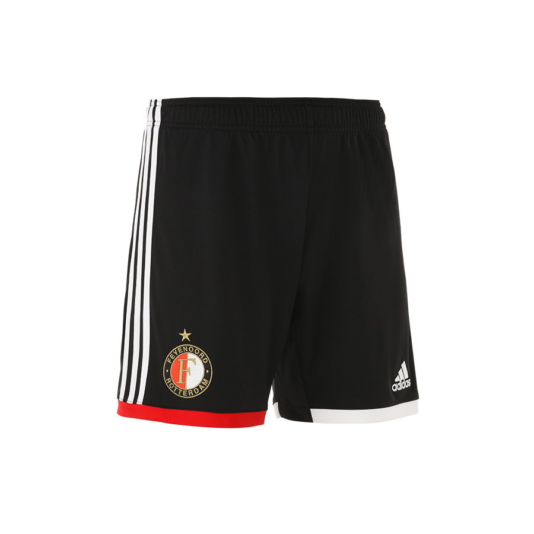
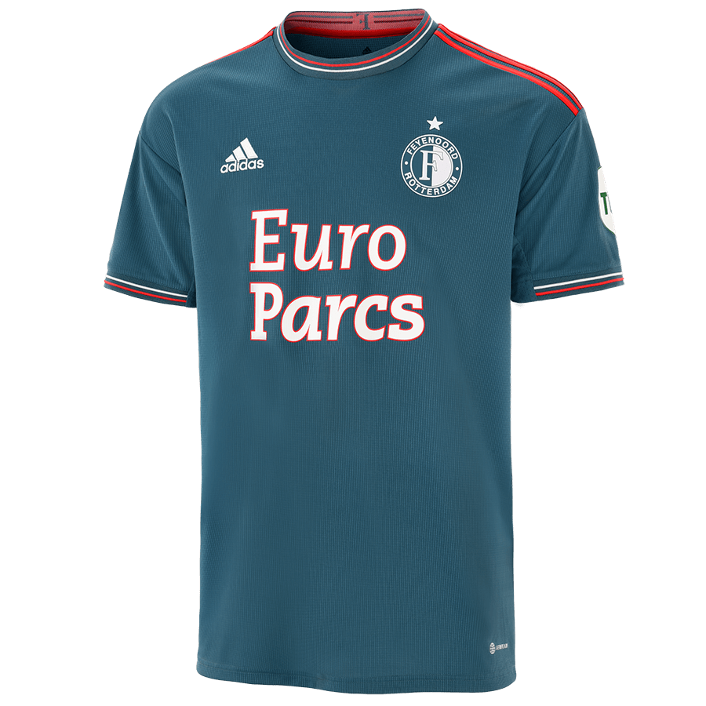
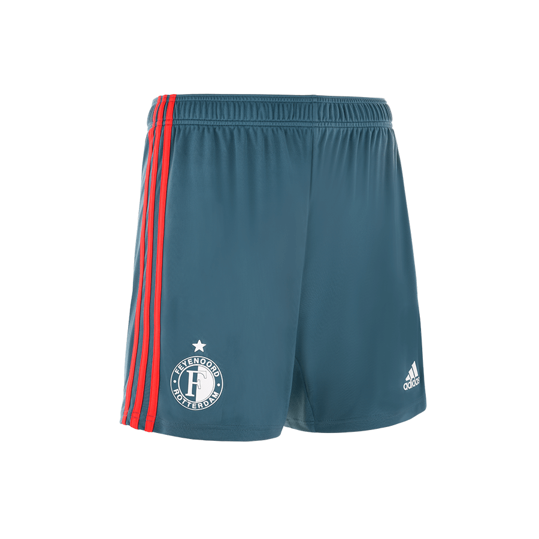
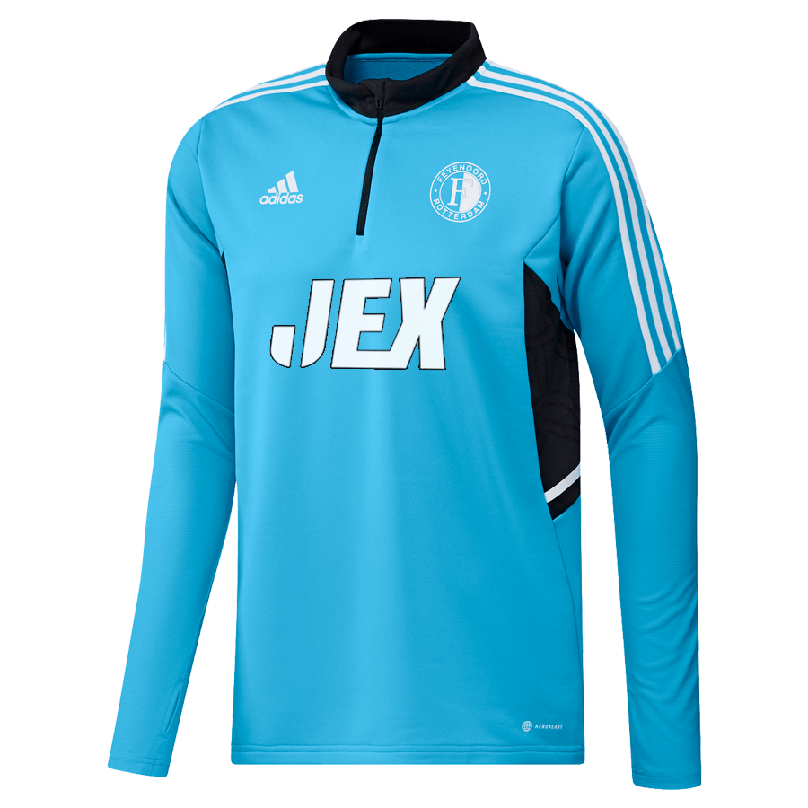
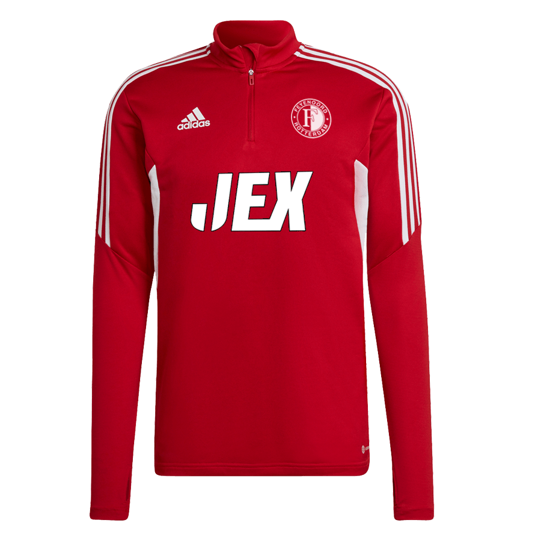
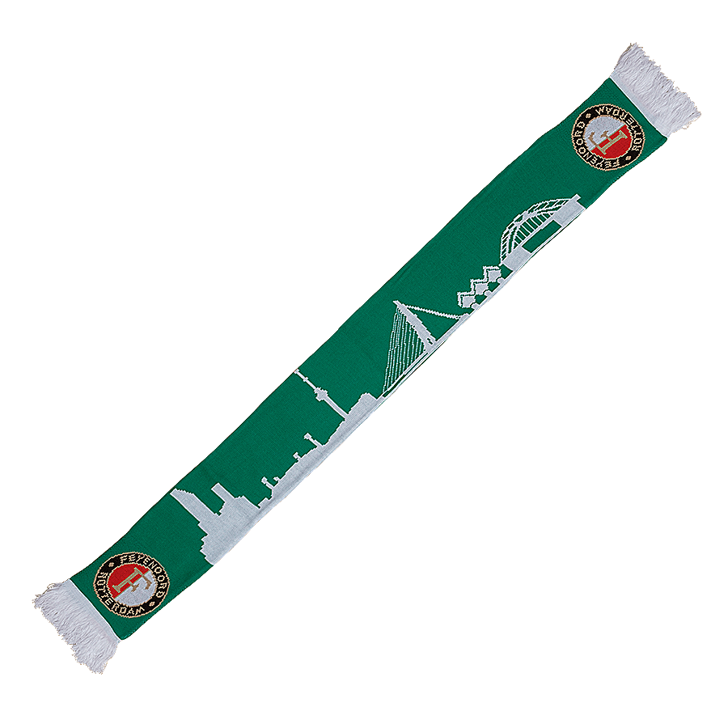
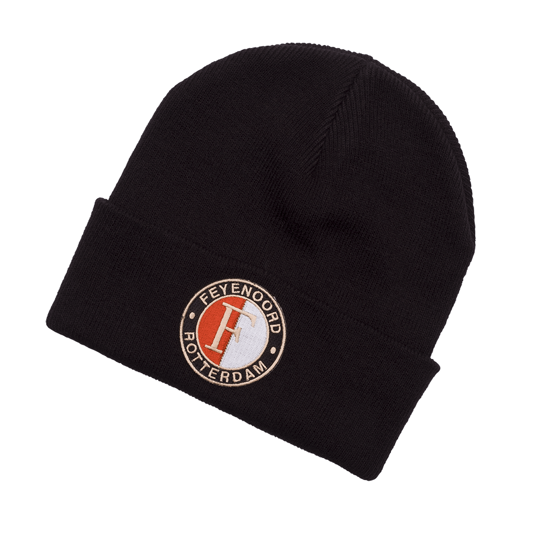

Het seizoen 2022-2023 kleurt weer rood-wit voor Feyenoord en kan beginnen na de lancering van het nieuwe thuisshirt. Het shirt ademt traditie: de kleuren rood en wit, een nostalgisch kraagje in contrasterend rood en wit, de gouden 'F' in de nek en het Feyenoord-logo geborduurd op de borst.
FEYENOORD THUISSHIRT 2022/23 € 90,00 Ledenprijs € 76,50
De Feyenoord thuisshort 2022-2023 is traditiegetrouw zwart van kleur met witte adidas strepen en een geborduurd Feyenoord-logo. Dit seizoen zijn de onderkanten van de short rood en wit gekleurd, wat de thuisshort net even anders maakt dan voorgaande seizoenen.
FEYENOORD THUISSHORT 2022/23 € 43,00 Ledenprijs € 36,55
Het seizoen 2022-2023 spelen zowel de heren-, de vrouwen- als de jeugdteams van Feyenoord in het eerste uittenue. Het tenue is overwegend blauw, aangevuld met accenten in de clubkleuren rood en wit.
FEYENOORD UITSHIRT 2022/23 € 90,00 Ledenprijs € 76,50
De Feyenoord uitshort 2022-2023 is indigo van kleur met rode accenten. De rode strepen van adidas op de zijkanten in combinatie met het witte Feyenoord-logo en adidas-logo maken de uitshort passend bij het uitshirt en de kousen.
FEYENOORD UITSHORT INDIGO 2022/23 € 43,00 Ledenprijs € 36,55
De trainingstop van Feyenoord voor het seizoen 2022-2023 heeft de unieke en eigen kleur cyaan. De top is ideaal voor de koudere trainingsdagen door de lange mouwen met duimgaten. De comfortabele pasvorm, zachte stof en halve ritssluiting maken het de ideale trui om de trainingen in af te werken.
FEYENOORD TRAININGSTRUI CYAAN 2022/23 € 73,00 Ledenprijs € 62,05
De medische en technische stafleden van Feyenoord stappen het trainingsveld op in de rode kleur in combinatie met zwart. De trainingstrui is voorzien van AEROREADY waardoor je droog en fris blijft tijdens de training.
FEYENOORD TRAININGSTRUI ROOD 2022/23 € 73,00 Ledenprijs € 62,05
Met deze sjaal laat je zien dat je een echte Feyenoord-supporter bent! De groene sjaal toont de skyline van Rotterdam, zodat je buiten kunt laten zien hoe trots je bent op de stad. Draag de sjaal thuis, op straat of in De Kuip en steel de show.
FEYENOORD SJAAL SKYLINE ROTTERDAM, GROEN € 15,95 Ledenprijs € 13,56
De koudere winterdagen komen eraan en dat betekent dat je goed gekleed moet zijn! Zorg dat jij jezelf warm aankleedt met de zachte Feyenoord-muts. De omgeslagen boord biedt dubbele bescherming voor je oren en voorhoofd en is gecombineerd met het Feyenoord-logo. De muts voelt heerlijk zacht en warm aan en maakt jou helemaal klaar voor het na-jaar.
FEYENOORD MUTS LOGO ZWART € 9,95 Ledenprijs € 8,46